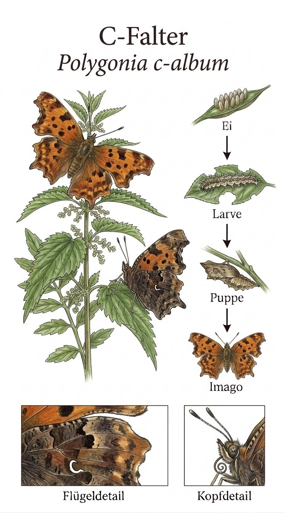
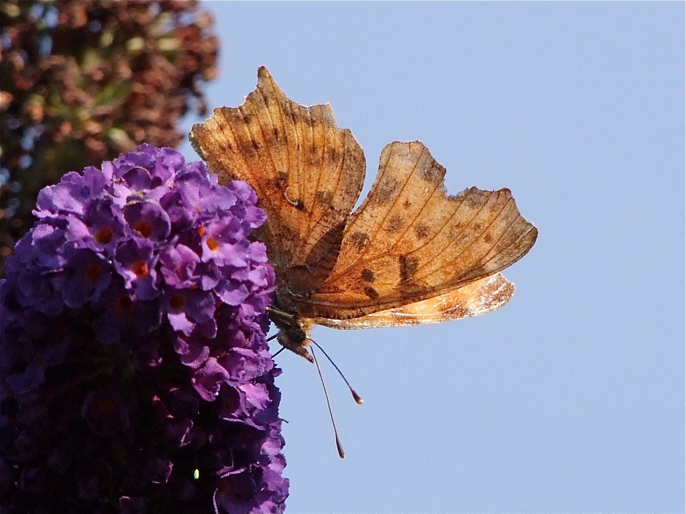

Insekten › Schmetterlinge › Tagfalter › Edelfalter

Polygonia c-album

Foto: Michael Baur · Olympus OM-5 · CC BY-NC
Klappt der C-Falter seine Flügel zusammen, verschwindet er beinahe. Die braun-graue Unterseite sieht aus wie ein trockenes Blatt oder ein Stück Baumrinde. Nur wer genau hinschaut, entdeckt das kleine weiße C auf dem Hinterflügel – das namensgebende Merkmal, das wie eine Signatur wirkt. Der wissenschaftliche Name c-album bedeutet schlicht weißes C. Dieses Merkmal ist so eindeutig, dass Schmetterlingskenner den C-Falter selbst im schnellen Vorbeiflug sofort erkennen.
Die unregelmäßig gezackten Flügelränder des C-Falters sehen aus, als hätte jemand daran herumgeknabbert. Doch das ist kein Schaden, sondern geniales Design: Diese Silhouette bricht die typische Schmetterlingsform auf und macht den ruhenden Falter noch unauffälliger. Zusammengeklappt auf einem Ast ist er kaum von einem welken Blatt zu unterscheiden – ein Meisterstück der Tarnung, das über Jahrmillionen verfeinert wurde.
Der C-Falter überwintert als fertiger Falter, versteckt in Felsspalten, unter Rinde oder in Holzstapeln. Wenn im Februar die ersten Sonnenstrahlen locken, ist er oft einer der ersten Tagfalter, die man zu Gesicht bekommt. Noch liegt Schnee in den Schatten, und schon kreist dieses braun-orange Wesen durch den Garten – ein verlässliches Zeichen, dass der Frühling wirklich kommt. Die Sommergeneration erscheint ab Juni und ist etwas heller gefärbt als die Überwinterer.
Texte und Bilder aus der Broschüre „Schmetterlinge im Ebsdorfergrund“ (Michael Baur), 1:1 übernommen · Fotos CC BY-NC, Illustrationen im Stil klassischer Lehrtafeln. Die Artseite ist der gemeinsame Endpunkt von Bestimmungsschlüssel und Stammbaum.